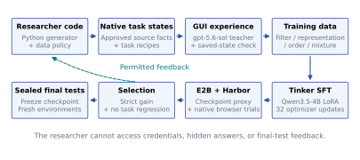

Data research.
Tested in real software.
Researcher agents write Python, create native task states, collect verified GUI experience, and train a separate browser student. Every claim follows executed evidence.
Read the English technical reportFixed teacher: gpt-5.6-sol.
Student: Qwen/Qwen3.5-4B.
A program, a task state, and a verified outcome

The researcher controls generation, filtering, representation, ordering, and mixtures. The controller owns source permissions, budgets, teacher execution, training, evaluation, and checkpoint preservation. Final evidence stays hidden until all searches in its cohort close.
Follow the candidate through each round
Scores cover three fixed selection instances. Unscored rounds are not zeros. Promotion requires strict mean improvement with no per-task regression. These plots do not compare cohorts under matched conditions.
Training-resource trajectory
Freeze first. Evaluate afterward.
Repetitions use the same sampling seed in fresh environments. They do not create additional independent task instances. A complete mean remains undefined if any prescribed execution is infrastructure-invalid.
Real interface. Constructed workflows. Saved-state scoring.

Kanboard 1.2.54. Original PHP application and SQLite persistence.
Authentic and synthetic data
The snapshot contains 37 public issue metadata records with source URLs and timestamps. Staff, project names, workflow rules, costs, capacities, dependencies, and archive distractors are synthetic. Source pools are separated into training, selection, and final records.
What the browser student can do
Read visible DOM text and controls; click, fill, select, use limited keypresses, go back, and finish. No shell, SQL, application API, file editor, or arbitrary URL action is available. Screenshots are audit artifacts.
What earns success
A separate verifier compares initial and final application state. Every target update must be correct and unrelated state must remain intact. Declaring completion earns no reward.
What is not measured
This is DOM-assisted browser use in one application. It does not measure pixel-only grounding, full Windows/macOS operation, Microsoft Office, broad transfer, or sustained recursive improvement.
Separate evidence. Explicit boundaries.
The audit reconstructs verified training records, checks dataset and checkpoint bindings, re-reads verifier results, and checks budgets, promotion, and final-test timing. Rejected submissions and infrastructure-invalid outcomes remain visible. Provider dollar costs are unknown.
Original cohort evidence / Sol 6 / Luna 6 evidence / Combined presentation index / Manuscript source